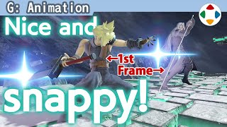
速览
上次动作分类讲过，预备是按下该动作的按钮后到实际出招之间的姿势，也叫预备动作或蓄力（详见「攻击动作的拆解」）。《大乱斗 特别版》的蓄力打击正是在预备姿势途中让角色颤抖。看几个例子，有与其他游戏不同的特点：首先，从按下按钮的瞬间姿势就大幅改变。从待机姿势的补间本来要细致做，否则跳帧感会增加；但《大乱斗》重视响应，接受输入就立即返回反应。网络或电视造成的延迟无法避免，但接受玩家输入后立刻反应，这是理想。另外，几乎没有预备的攻击其实也存在：例如零装萨姆斯的弱攻击，从反应起 1 帧就出——没有预备游戏也能成立。《快打旋风》的刺拳瞬间出、能连打，响应好很舒服。不过网络游戏中，蓄力有时承担填补通信延迟的作用；而且没有扎实的蓄力或预备，就缺乏狠狠打中的印象。所以不是一味求快就好。总之，从好好传达输入已被接受的观点来研究预备，怎么样？
1. 什么是预备 0:03
上次讲过，预备是按下该动作的按钮之后，到实际出招之间的姿势，也叫预备动作或蓄力。
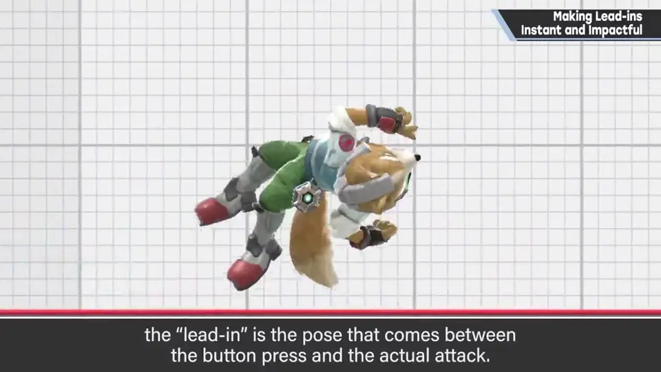
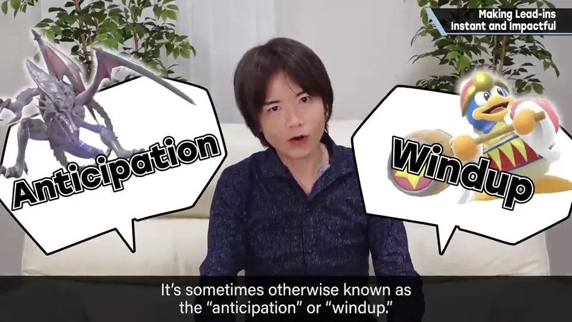
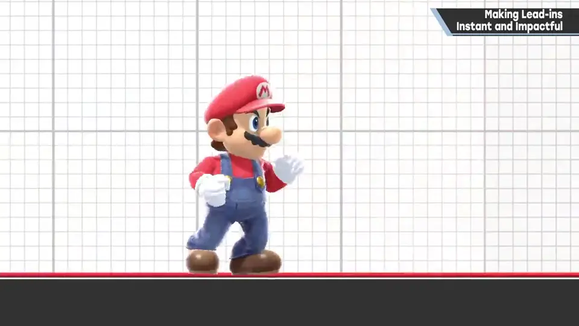
《大乱斗 特别版》的蓄力打击，正是在预备姿势途中让角色颤抖。
2. 按下瞬间大幅改变 0:40
看几个例子，有与其他游戏不同的特点：从按下按钮的瞬间，姿势就大幅改变。
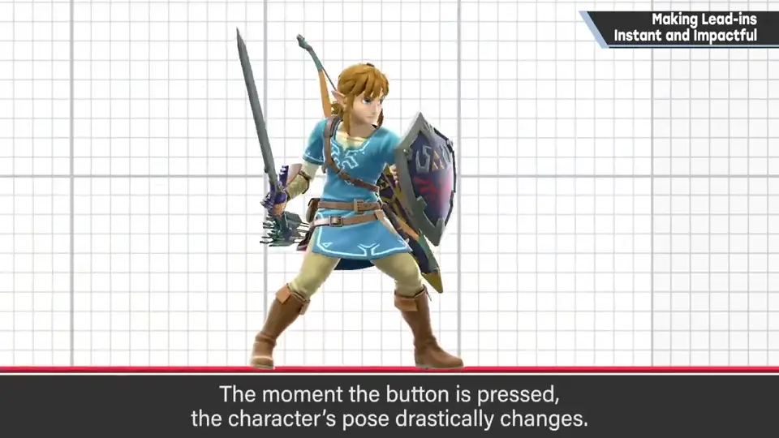
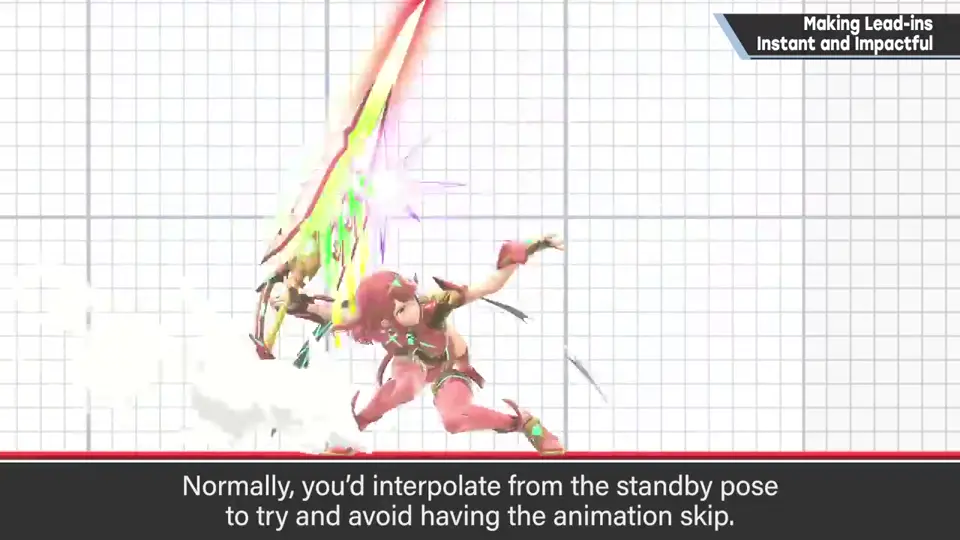
从待机姿势的补间本来要细致地做，否则跳帧感会增加。
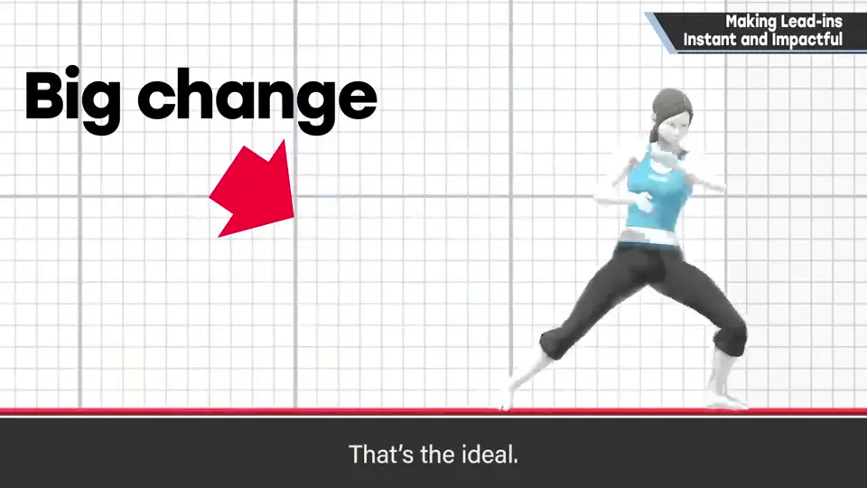
3. 没有预备也能成立 1:20
其实也有几乎没有预备的攻击：例如零装萨姆斯的弱攻击，从反应起 1 帧就出。没有预备，游戏也能成立。
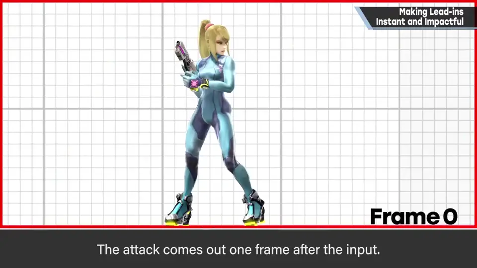
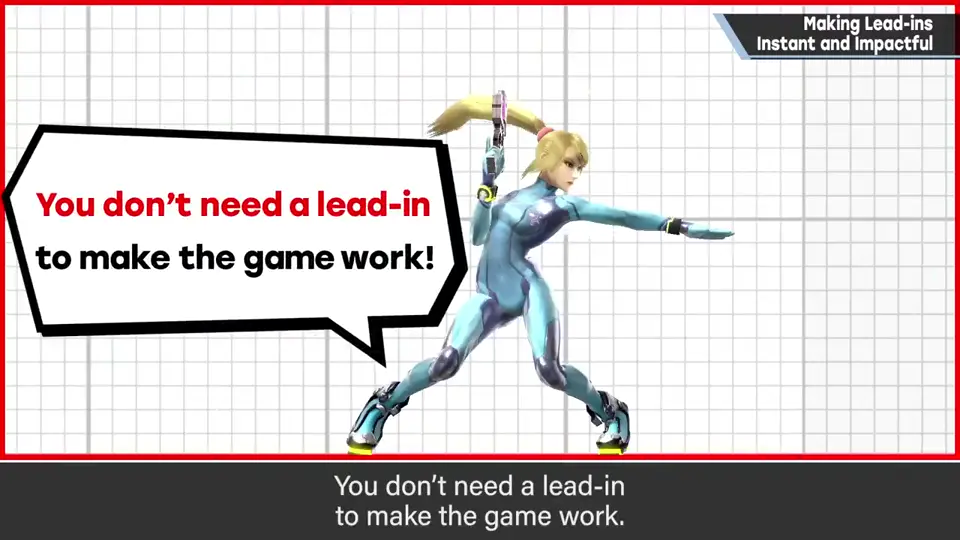
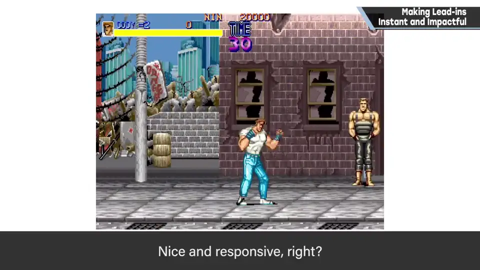
《快打旋风》的刺拳瞬间就出、能连打，响应好很舒服。
4. 但不是越快越好 1:45
不过在网络游戏中，蓄力有时承担着填补通信延迟的作用。
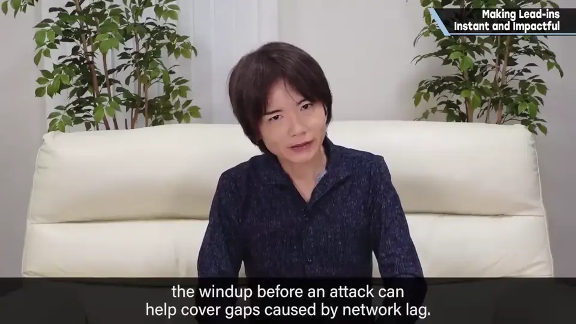
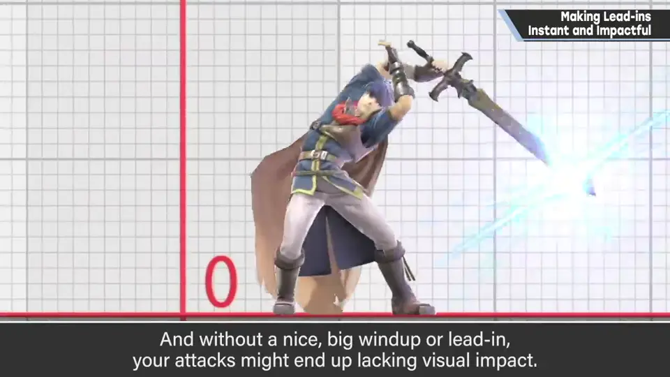
而且没有扎实的蓄力或预备，就缺乏狠狠打中的印象。
自测题
1. 《大乱斗》的预备动作有什么特点？为什么？
按下瞬间姿势就大幅改变；重视响应，接受输入就立即反应。 0:50
2. 举一个几乎没有预备的攻击例子。
零装萨姆斯的弱攻击，1 帧就出。 1:25
3. 为什么预备不能一味缩短？
网络对战中蓄力可填补延迟；没有预备，打击缺乏冲击感。 1:50